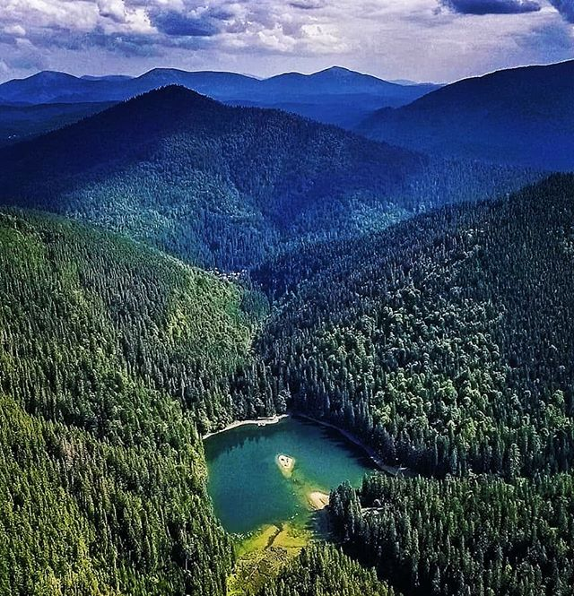

Озеро Синевир
Синевир (інші назви — Синєви́р, Морське Око) справедливо називають найкрасивішим озером нашої країни. Морське око Карпат, що дрімає у нетрях прадавніх лісів. Cеред Карпатських гір на висоті 989 метрів над рівнем моря. Його зіниця – зелений острів, що виглядає невеликим клаптиком суші посеред води. Утворився Синевир близько десятка тисяч років тому унаслідок потужного зсуву гірських порід від землетрусу. Спокійний і непорушний, він ніколи, навіть у час найбільших паводків, не виводить свої води із берегів.
Озеро утворилося в результаті потужного зсуву, спричиненого землетрусом близько 10 тисяч років тому. На висоті 989 м гірські кам'янисті породи стали на шляху швидкого струмка, утворивши греблю і повністю перегородивши вузьку долину. Улоговина, що при цьому виникла, заповнилася водою трьох гірських струмків.
Галерея